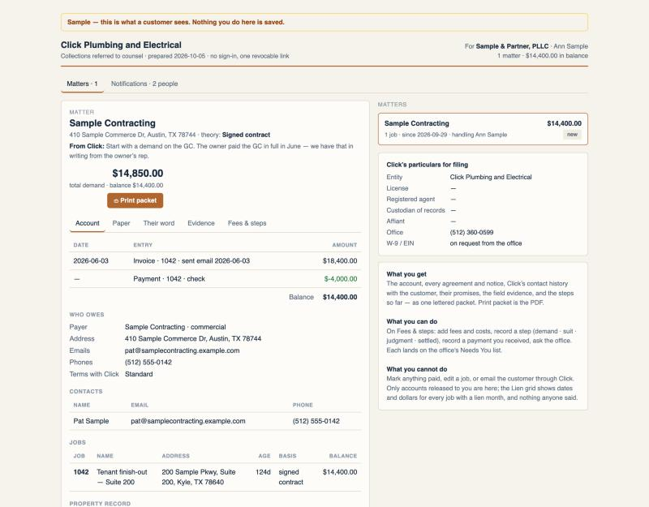
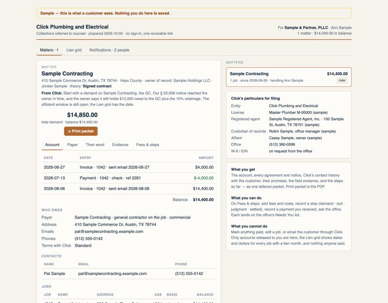
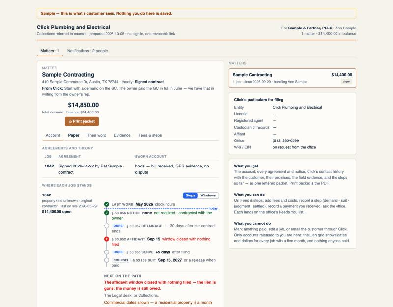
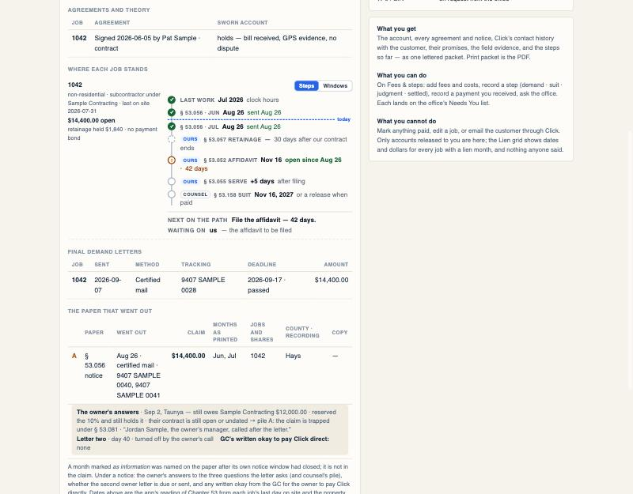
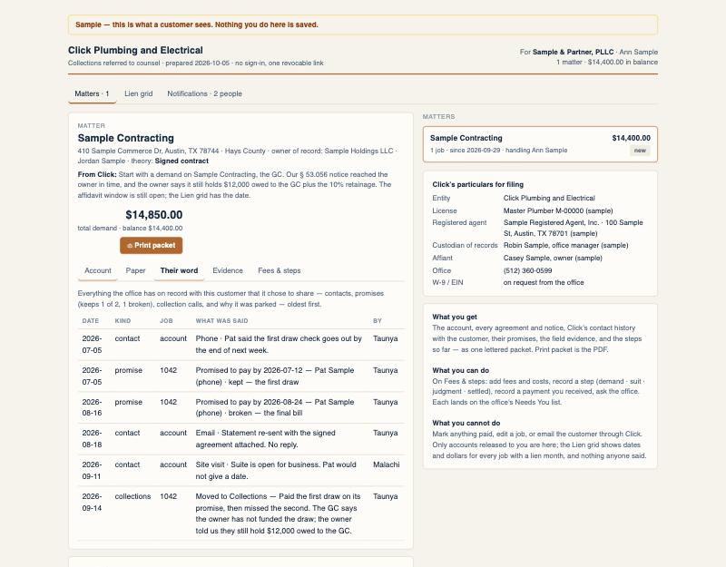
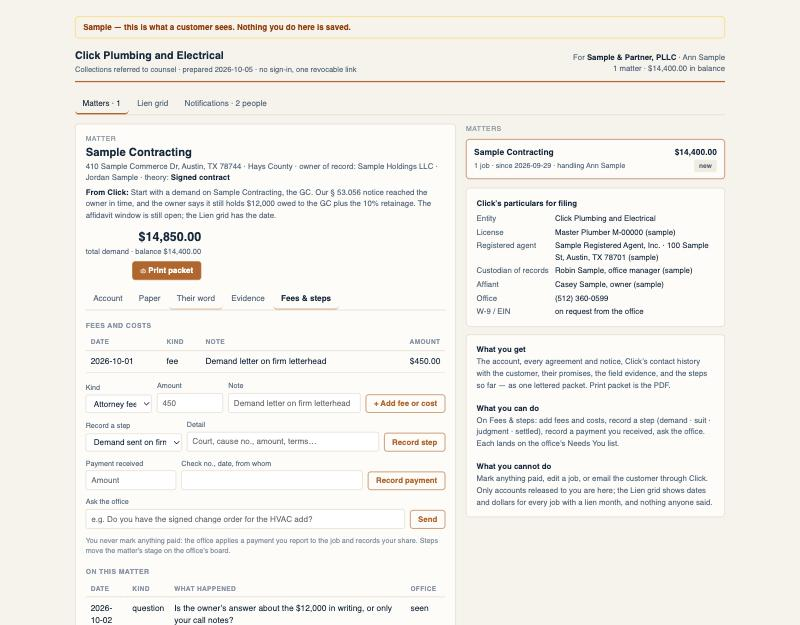
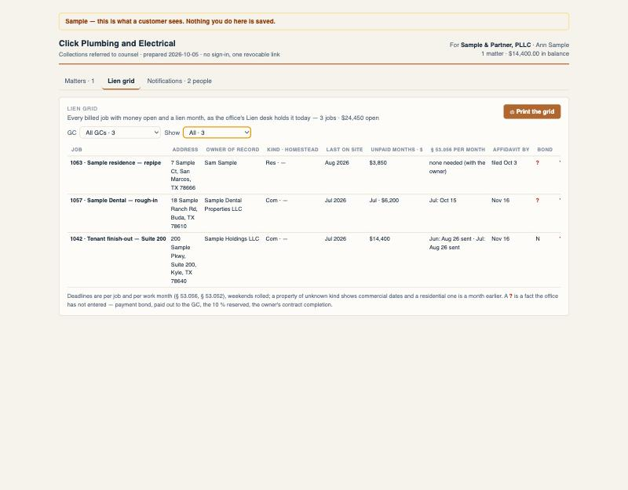

Punch list #85 · item 9 · mockup
/legal?t=sample is what the firm will see tomorrow. The old sample contradicted itself and left three panels empty. The new one tells one story, every date relative to today, and every claim passes through the same parser and packet kernel as a real matter. Screenshots are the portal itself, walked in the preview browser at 1280 px on 2026-10-05.
| Before | After |
|---|---|
| The note says "start with a demand on the GC", but the job reads original contractor · § 53.056 notice not required · contracted with the owner: the GC was stored as the customer. | The building's owner (Sample Holdings LLC) is the job's customer and Sample Contracting is its GC, so Click is the subcontractor and the GC is the payer. The note asks for a demand on the GC. |
The payment has no date and no check number: the sample used payment_date / reference, not the real row's columns. | The real columns: paid_on, sent_on, payment_type, reference_number. The ledger reads Payment · 1042 · check · ref 2291 with its day. |
| No property record, no demand letter, no lien paper: Paper is near empty, there is no Lien grid tab, and Paper says the affidavit window closed with nothing filed — the lien is gone. | A property record (Hays County, owner of record, legal description, parcel), a § 53.056 notice sent in time to the owner and the GC with the owner's answers (still owes the GC $12,000, holds the 10%: pile A), a final demand by certified mail with its deadline passed, and an affidavit window still open: File the affidavit — 42 days. |
| "Two promises missed" beside one promise. | Two promises: the first draw kept by the check, the final bill broken. The note says exactly that. |
| Click's particulars: license, registered agent, custodian and affiant all "—". | Filled with plainly sample values, each ending "(sample)". |
| No firm question, no office answer. | The firm's fee, the firm's question (seen) and the office's answer, in the last four days. |







legal-portal redeploy. Refined: the page builds the sample itself from the same shared fixture the function answers with (sampleLegalPortalResponse), so it shows the moment the page ships, makes no network call, and the function's answer stays identical for anyone calling it.legal-portal summed every bill on the job, so on a real matter like this one the first promise would read as broken on the firm's page and kept on the desk. Fixed in the same PR: billedAtPromise, the desk RPC's rule, in a shared kernel with a test.$-4,000.00: that is item 5's one formatter. The Lien grid's paid-out and 10 % columns stay "?" even though the owner answered: the grid kernel does not read the owner's call yet (worth a later item).